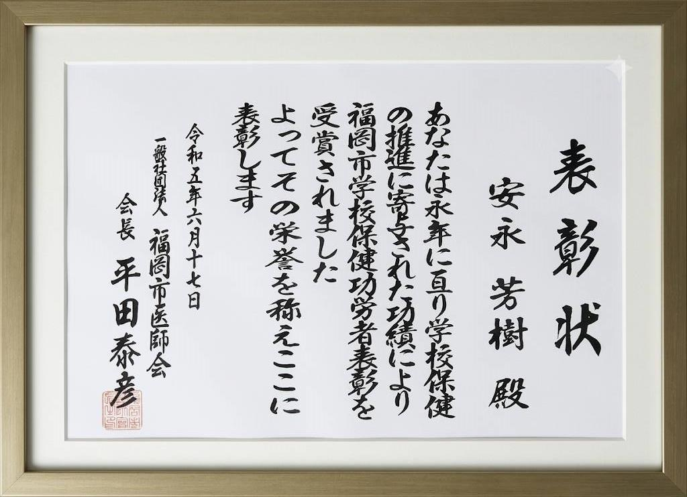

院長ご挨拶
ホームページをご覧いただきありがとうございます。やすなが内科クリニック 院長の安永芳樹と申します。
私は、福岡大学病院や福岡市医師会成人病センター（現在、福岡大学西新病院）における認定内科医・消化器病専門医としての臨床経験を活かし、2003年 飯倉3丁目に当院を開院致しました。その後、2011年 飯倉バス停前（レガネット前）に移転開院し現在に至ります。
地域に根ざした「かかりつけ医」として
私が福岡市で初めて住んだ場所がこの早良区飯倉です。その馴染みある場所で開院することができたご縁を大切に、地域の「かかりつけ医」として、これまで皆さまの健康維持に微力ながら尽力してまいりました。地域活動におきましても、原中学校の校医を開院当初から拝命し、生徒さんたちの成長を見守りながら地域の皆さまと共に歩ませていただいております。
患者さまお一人おひとりの健康を長く見守り、ともに歩む「パートナーシップ」を大切にしています。
長年診察を続ける中で私が大切にしてきたのは「病気を治すこと」はもちろん、患者さまの将来を見据えて「長く病気や健康状態を見守り、変化にできるだけ早く対応すること」です。持病をお持ちの方にとっては、日常の小さな変化に気づける継続的な管理が欠かせません。また、一言に「お腹の調子が悪い」と言っても、原因が胃腸だけとは限りません。実は、腎臓や膀胱、子宮・卵巣などの変化が影響していたり、慢性的な「だるさ」が甲状腺のサインだったりすることもあります。そのため、当院では、お体に優しく受けられる超音波（エコー）検査などを活用し、日常の健康維持から持病の経過観察まで、丁寧な診察を大切にし、病気の早期発見と長期的な健康管理に努めています。
慢性疾患をお持ちの方も、今健康な方も、日々の変化にいつでも寄り添い適切に対処できるようサポートいたします。また、地域の基幹病院との連携や専門医療機関へのご紹介体制も整え、必要に応じてスムーズな橋渡しを行っています。
地域の皆さまの『最初の相談窓口』として、「まずはここで診てもらえば安心だ」と人生の節目節目に頼っていただけますよう、スタッフと共にこれからも医院づくりに努めてまいります。
どうぞよろしくお願いいたします。
院長プロフィール
氏名
安永 芳樹 Yoshiki Yasunaga
資格
医学博士
日本消化器病学会 消化器病専門医
日本消化器内視鏡学会 内視鏡専門医
日本内科学会 認定内科医
日本医師会認定産業医
所属学会
日本消化器病学会
日本消化器内視鏡学会
日本内科学会
地域活動
福岡市原中学校 校医

学校医として20年目の活動の年に医師会よりいただいた表彰状です。